컴퓨터응용선반기능사 (2008-02-03 기출문제)
1과목: 기계재료 및 요소
1. 평 벨트의 이음 방법 중 이음 효율이 가장 좋은 것은?
- 이음쇠 이음
- 가죽끈 이음
- 철사 이음
- 접착제 이음
(정답률: 66%)

2. 미터 나사에 관할 설명으로 잘못된 것은?
- 기호는 M으로 표기한다.
- 나사산의 각은 60°이다.
- 호칭 지름은 인치(inch)로 나타낸다.
- 부품의 결합 의 위치의 조정 등에 사용된다.
(정답률: 66%)
3. 비중이 약 2.7이며 가볍고 내식성과 가공성이 좋으며 전기 및 열전도도가 높은 재료는?
- 금(Au)
- 알루미늄(Al)
- 철(Fe)
- 은(Ag)
(정답률: 82%)
4. 내열강의 구비 조건으로 틀린 것은?
- 기계적 성질이 우수할 것
- 화학적으로 안정할 것
- 열팽창계수가 클 것
- 조직이 안정할 것
(정답률: 81%)
5. 뜨임은 보통 어떤 강재에 하는가?
- 가공 경화된 강
- 담금질하여 강화된 강
- 용접 응력이 생긴 강
- 풀림하여 연화된 강
(정답률: 69%)
6. 베어링 호칭 번호 6304에서 6은 무엇인가?
- 형식기호
- 치수 기준
- 지름번호
- 등급기준
(정답률: 68%)
7. 다음 중 Cr 또는 Ni을 다량 첨가하여 내식성을 현저히 향상시킨 강으로 조직상 페라이트계, 마텐자이트계, 오스테나이트계 등으로 분류되는 합금강은?
- 규소강
- 스테인리스강
- 쾌삭강
- 자석강
(정답률: 72%)
8. 브레이크 슈를 바깥쪽으로 확장하여 밀어 붙이는데 캠이나 유압장치를 사용하는 브레이크는?
- 드럼 브레이크
- 원판 브레이크
- 원추 브레이크
- 밴드 브레이크
(정답률: 45%)
9. 백심가단 주철에서 사용되는 탈탄제는?
- 알루미나, 탄소가루
- 알루미나, 철광석
- 철광석, 밀 스케일의 산화철
- 유리탄소, 알루미나
(정답률: 43%)
10. 기계재료에 반복 하중이 작용하여 영구히 파괴되지 않는 최대 응력을 무엇이라 하는가?
- 탄성한계
- 크리프한계
- 피로 한도
- 인장 강도
(정답률: 52%)
11. 인장 코일에 스프링이 3kgf의 하중을 걸었을 때 변위가 30㎜ 이었다면, 이 스프링의 상수는 얼마인가?
- 0.1 kgf/㎜
- 0.2 kgf/㎜
- 5 kgf/㎜
- 10 kgf/㎜
(정답률: 53%)
12. 고강도 알루미늄 합금인 초두랄루민의 주성분은?(오류 신고가 접수된 문제입니다. 반드시 정답과 해설을 확인하시기 바랍니다.)
- Al-Cu-Mg-Zn
- Al-Cu-Mg-Mn
- Al-Cu-Si-Mn
- Al-Cu-Si-Zn
(정답률: 68%)
13. 축에 키 홈을 가공하지 않고 사용하는 키(key)는?
- 성크 키
- 새들 키
- 반달 키
- 스플라인
(정답률: 56%)
14. 구리(Cu)에 관한 다음 사항 중 틀린 것은?
- 비중이 1.7이다.
- 용융점이 1083℃ 정도이다.
- 비자성으로 내식성이 철강보다 우수하다.
- 전기 및 열의 양도체이다.
(정답률: 62%)
15. 모듈 3, 잇수 30과 60을 갖는 한 쌍의 표준 평기어 중심 거리는 얼마인가?
- 144 ㎜
- 126 ㎜
- 135 ㎜
- 148 ㎜
(정답률: 62%)
2과목: 기계제도(절삭부분)
16. 보기 도면과 같은 제품을 드릴 지름 18㎜로 구멍을 뚫을 때, 관통 구멍부인 플랜지의 두께 치수는?
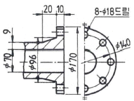
- 8
- 9
- 10
- 18
(정답률: 49%)
17. 기계제도에 사용되는 기호와 의미가 틀리게 설명된 것은?
- SR : 구의 지름
- R : 반지름
- C : 45° 모따기
- ø : 지름
(정답률: 78%)
18. 보기와 같은 나사가공 도면의 M12X16/ø10.2X20으로 표시된 치수 기입의 도면 해독으로 올바른 것은?
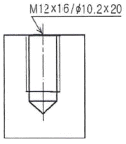
- 암나사 가공하기 위한 구멍가공 드릴지름은 12㎜
- 암나사 가공하기 위한 구멍가공 드릴지름은 16㎜
- 암나사 가공하기 위한 구멍가공 드릴지름은 10.2㎜
- 암나사 가공하기 위한 구멍가공 드릴지름은 20㎜
(정답률: 67%)
19. 보기 도면과 같이 나타내는 단면도의 명칭은?
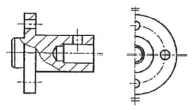
- 온 단면도
- 한쪽 단면도
- 부분 단면도
- 회전 단면도
(정답률: 49%)
20. KS 기하 공차기호 중 진원도 공차기호는?
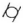
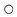
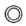
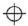
(정답률: 61%)
21. 다음 입체도의 화살표 방향 투상도로 가장 적합한 것은?
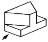
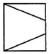
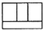
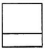
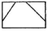
(정답률: 85%)
22. 보기와 같은 기계가공 도면에서 대각선 방향으로 가는 실선으로 교차하여 표시된 X 부분의 설명으로 가장 적합한 것은?
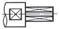
- 현장 끼워맞춤 표기한 곳
- 정밀하게 가공해야 할 곳
- 평면으로 가공해야 할 곳
- 사각구멍을 뚫어야 할 곳
(정답률: 71%)
23. 구름베어링의 호칭 번호가 6420 C2 P6으로 표시된 경우 베어링 내경은 몇 mm 인가?
- 42
- 64
- 100
- 420
(정답률: 64%)
24. 기계 부품도에서 ø50H7g6으로 표기된 끼워 맞춤의 설명이 틀린 것은?
- 억지 끼워 맞춤이다.
- 끼워 맞춤 구멍이 H7 등급이다.
- 끼워 맞춤 축이 g6 등급이다.
- 구멍 기준식 끼워 맞춤이다.
(정답률: 63%)
25. 다음은 베어링 커버의 도면이다. 거칠기가 가장 거친 부분은?
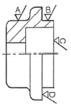
- A
- B
- C
- D
(정답률: 52%)
26. 모형이나 형판을 따라 바이트를 안내하며 테이퍼나 곡면등을 절삭하여 유압식, 전기식, 전기 유압식 등의 종류를 갖는 선반은?
- 공구 선반
- 자동 선반
- 모방 선반
- 터릿 선반
(정답률: 53%)
27. 가공 능률을 향상시키기 위하여 특정한 모양이나 치수의 제품을 대량 생산하는데 적합하도록 만든 공작 기계는?
- 범용 공작 기계
- 전용 공작 기계
- 단능 공작 기계
- 만능 공작 기계
(정답률: 68%)
28. 다음 중 정밀 입자 가공으로만 바르게 짝지어진 내용은?
- 방전 가공 : CNC 와이어 컷 방전 가공
- 액체 호닝 : 슈퍼 피니싱
- 이온 가공 : 레이저 가공
- 전해 가공 : 전주 가공
(정답률: 60%)
29. 다음과 같은 테이퍼를 절삭하고자 할 때 심압대의 편위량으로 적당한 것은?
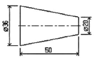
- 8
- 10
- 16
- 18
(정답률: 48%)
30. 측정의 종류에 피측정물을 측정한 후 그 측정량을 기준 게이지와 비교하여 차이값을 계산하여 실제 치수를 인식할 수 있는 측정법은?
- 직접 측정
- 간접 측정
- 비교 측정
- 한계 측정
(정답률: 76%)
3과목: 기계공작법
31. 지름이 다른 여러 종류의 환봉에 중심을 긋고자 한다. 다음 중 가장 적합한 공구는?
- 하이트 게이지
- 직각자
- 조절 각도기
- 콤비네이션 세트
(정답률: 44%)
32. 절삭 저항을 증대시키는 요소에 해당하는 것은?
- 절삭 속도의 감소
- 절삭 면적의 감소
- 경사각의 증가
- 절삭 깊이의 감소
(정답률: 49%)
33. 센트리스 연삭기의 장점 중 틀린 것은?
- 연속 작업으로 대량 생산에 적합하다.
- 가늘고 긴 공작물의 연삭은 불가능하다.
- 작업자의 숙련을 요구하지 않는다.
- 연삭 여유가 작아도 연삭이 가능하다.
(정답률: 63%)
34. 수평 밀링머신의 플레인 커터 작업에서 상향 절삭과 비교한 하향 절삭의 장점이 아닌 것은?
- 날의 마멸이 적고 수명이 길다.
- 일감의 고정이 간편하다.
- 절삭열에 의한 치수정밀도의 변화가 적다.
- 가공면이 깨끗하다.
(정답률: 51%)
35. 주철과 같은 메진 재료를 저속으로 절삭할 때 주로 생기는 칩으로서 가공면이 좋지 않은 것은?
- 유동형 칩
- 전단형 칩
- 열단형 칩
- 균열형 칩
(정답률: 52%)
36. 밀링 머신 중 새들 위에 회전대가 있어 수평면 상에서 필요한 각도로 테이블을 회전시켜 이송함으로써 트위스트 드릴의 비틀림 홈 등을 가공할 수 있는 것은?
- 수직 밀링 머신
- 만능 밀링 머신
- 회전 밀러
- 플래노 밀러
(정답률: 41%)
37. W, Wi, Ta 등의 탄화물 분말을 Co나 Ni 분말과 혼합하여 프레스로 성형한 다음 1400℃ 이상의 고온에서 소결하여 만든 공구 재료는?
- 주조 합금
- 초경 합금
- 시효 경화 합금
- 고속도강
(정답률: 60%)
38. 피측정물을 양 센터에 지지하고 , 360° 회전시켜 다이얼 게이지의 최대값과 최소값의 차이로 진원도를 측정하는 것은?
- 직경법
- 반경법
- 3점법
- 센터법
(정답률: 41%)
39. 한 대의 드릴링 머신에 다수의 스핀들을 설치하고자 한개의 구동축으로 유니버셜 조인트를 이용하여 여러 개의 드릴을 동시에 구동시키는 드릴링 머신은?
- 레이디얼 드릴링 머신
- 다축 드릴링 머신
- 다두 드릴링 머신
- 탁상 드릴링 머신
(정답률: 58%)
40. 밀링 작업에서 절삭 속도와 이송을 결정하는 경우 고려할 사항으로 올바른 것은?
- 고운 가공면을 얻기 위해서는 절삭 속도를 크게 하고 이송을 적게 한다.
- 고운 가공면을 얻기 위해서는 절삭 속도를 크게 하고 절삭 깊이를 크게 한다.
- 커터의 수명을 연장하기 위해서는 절삭 속도를 크게 한다.
- 커터의 지름과 폭이 작은 경우에는 저속으로 절삭한다.
(정답률: 59%)
4과목: CNC공작법 및 안전관리
41. 바이트 이외에 선반에서 사용할 수 있는 일반적인 절삭 공구는?
- 호브
- 방전 전극
- 드릴
- 브로우치
(정답률: 72%)
42. 다음은 연삭 숫돌의 표시법이다. 각 항에 대한 설명 중 틀린 것은?
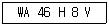
- WA : 연삭 숫돌 입자
- 46 : 조직
- H : 결합도
- V : 결합제
(정답률: 59%)
43. 다음 그림에서 공구 날끝 반지름 보정을 할 때 맞는 준비 기능은?
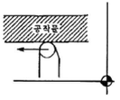
- G40
- G41
- G42
- G43
(정답률: 54%)
44. 그림과 같이 (ㄱ)→(ㄴ)으로 평면 원호 가공이나 머시닝 센터 프로그램으로 맞는 것은?
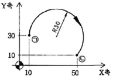
- G17 G03 G90 X50. Y10. R30. F80 ;
- G18 G03 G90 X50. Y10. R-30. F80 ;
- G17 G02 G90 X50. Y10. R-30. F80 ;
- G18 G02 G90 X50. Y10. R30. F80 ;
(정답률: 47%)
45. 다음 CAD/CAM 장치 출력에 사용되는 것은?
- 키보드(Key board)
- 라이트 펜(Light pen)
- 디지타이저(Digitizer)
- 플로터(Plotter)
(정답률: 68%)
46. CNC 선반 프로그램의 설명으로 틀린 것은?
- 동일 블록에서 절대 지령과 증분 지령을 혼합하여 지령 할 수 있다.
- M01 기능은 자동 운전시 선택적으로 정지시킨다.
- 급속 위치 결정(G00)은 프로그램에서 지령된 이송속도로 이동한다.
- 머신 록 스위치를 ON하면 자동 운전을 실행해도 축이 움직이지 않는다.
(정답률: 37%)
47. CNC 기계 가공 중 충돌 사고가 발생할 위험이 있을때, 응급 처리 내용으로 가장 알맞은 것은?
- 선택적 정지(optional stop) 버튼을 누른다.
- 원상 복귀(reset) 버튼을 누른다.
- 가공 시작(cycle start) 버튼을 누른다.
- 비상 정지(emergency stop) 버튼을 누른다.
(정답률: 76%)
48. 다음 중 CNC 선반에서 가공하기 어려운 것은?
- 나사 가공
- 래크 가공
- 홈 가공
- 드릴 가공
(정답률: 59%)
49. 머시닝 센터 고정 사이클 기능에서 보링 작업용 코드만으로 바른 것은?
- G73, G81
- G74, G84
- G76, G85
- G83, G84
(정답률: 40%)
50. CNC 선반에서 1초 동안 일시 정지(dwell) 명령으로 틀린 것은?
- G04 X1.0 ;
- G04 W1.0 ;
- G04 U1.0 ;
- G04 P1000 ;
(정답률: 50%)
51. 드릴링 머신의 작업시 안전 사항 중 틀린 것은?
- 드릴을 회전시킨 후에는 테이블을 조정하지 않는다.
- 드릴을 고정하거나 풀 때는 주축이 완전히 정지한 후에 작업을 한다.
- 드릴이나 드릴 소켓 등을 뽑을 때는 해머 등으로 가볍게 두드려 뽑는다.
- 얇은 판의 구멍 뚥기에는 밑에 보조 판 나무를 사용 하는 것이 좋다.
(정답률: 62%)
52. CNC 프로그램에서 보조 프로그램에 대한 설명으로 틀린 것은?
- 보조 프로그램의 마지막에는 M99가 필요하다.
- 보조 프로그램은 다른 보조 프로그램을 가질수 있다.
- 보조 프로그램을 호출할 때는 M98을 사용한다.
- 주프로그램은 오직 하나의 보조 프로그램만 가질 수 있다.
(정답률: 61%)
53. CNC 선반의 복합형 고정 사이클(예:G71~G76 등)에 있어서 사이클 가공의 종료시 공구가 복귀하는 위치는?
- 프로그램의 원점
- 제2원점
- 기계 원점
- 사이클 가공 시작점
(정답률: 41%)
54. 다음 보기에서 기능 취소를 나타내는 준비 기능을 모두 고른 것은?
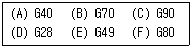
- B, C, D
- A, C, E
- B, D, F
- A, E, F
(정답률: 55%)
55. 머시닝 센터 작업 중 칩이 공구나 일감에 부착되는 경우 해결 방법으로 잘못된 것은?
- 많은 양의 절삭유를 공급하여 칩이 흘러내리게 한다.
- 고압의 압축 공기를 이용하여 불어 낸다.
- 장갑을 끼고 수시로 제거한다.
- 칩이 가루로 배출되는 경우는 집진기로 흡입한다.
(정답률: 79%)
56. CNC 선반 프로그램 중 G96 S120 M03 ;이 의미하는 것은?
- 절삭 속도 120rpm, 주축 정회전
- 절삭 속도 120rpm, 주축 역회전
- 절삭 속도 120m/min, 주축 정회전
- 절삭 속도 120m/min, 주축 역회전
(정답률: 57%)
57. 서버 기구에서 위치와 속도의 검출을 서버 모터에 내장 된 엔코더(encoder)에 의해서 검출하는 방식은?
- 반폐쇄 회로 방식
- 개방 회로 방식
- 폐쇄 회로 방식
- 반개방 회로 방식
(정답률: 54%)
58. 다음 설명 중 틀린 것은?
- G코드가 다른 그룹(group)이면 몇 개라도 동일 블록에 지령하여 실행시킬 수 있다.
- 동일 그룹에 속하는 G코드는 동일 블록에 2개 이상 지령하면 나중에 지령한 G 코드만 유효하다.
- 00 그룹의 G코드는 연속 유효(Modal) G코드이다.
- G코드 알람표에 없는 G코드는 지령하면 경보가 발생한다.
(정답률: 35%)
59. 머시닝센터에서 2날-ø20 엔드밀 가공할 때 분당 이송량은 얼마인가?(단, 절삭속도는 120m/min, 회전수는 2000rpm, 날당 이송은 0.08㎜/tooth이다.)
- 104 ㎜/min
- 160 ㎜/min
- 320 ㎜/min
- 380 ㎜/min
(정답률: 49%)
60. 머시닝 센터의 G코드 일람표에서 원점복귀 명령과 관련이 없는 코드는?
- G27
- G28
- G30
- G40
(정답률: 58%)